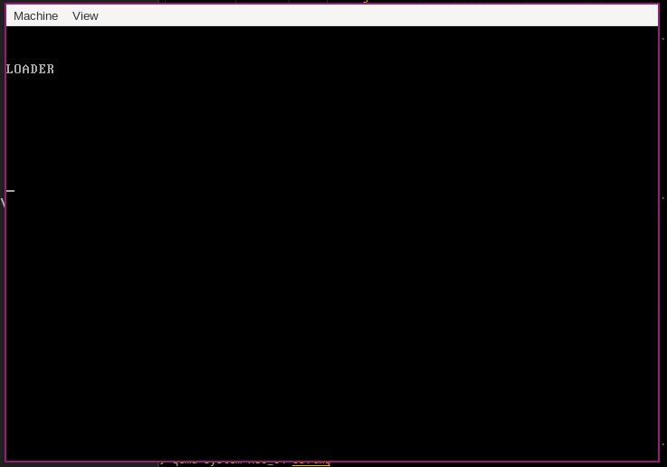
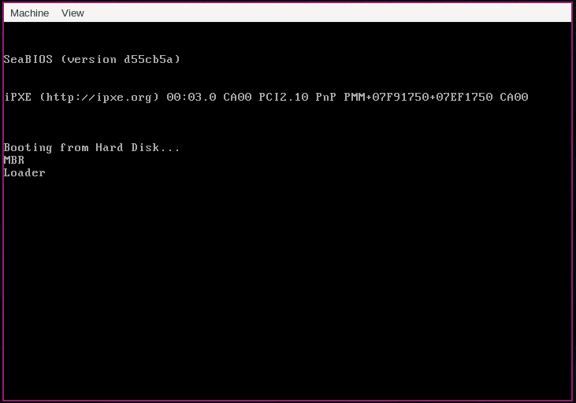

- categories
- >
- OS
参考
《操作系统真相还原》
基础概念
两种读盘方式：
CHS
CHS 方法：柱面-磁头-扇区（Cylinder Head Sector, CHS）
扇区编号从 1 开始。
对人：每次需要事先算出扇区盘面、柱面
对磁头：直观
LBA
LBA 方法：（Logical Block Address）扇区编号从 0 开始。
- LBA28，使用 28 比特描述扇区地址。最大寻址范围是 2^28=268435456 个扇区，每个扇区 512 字节，最大支持 128GB
- LBA48，用 48 位比特描述一个扇区的地址。最大寻址范围为 2^48=281474976710656 个扇区，每个扇区 512 字节，最大支持 131072TB=128PB
计算方式：
LBA=C×磁头总数×每道扇区数+H×每道扇区数+（S-1）LBA 寄存器（8 位宽度）:
- LBA low，存储 28 地址的 0~7 位
- LBA mid，存储 28 地址的 8~15 位
- LBA high，存储 28 地址的 16~23 位
device 寄存器，8 位宽度。
- 低四位存储 LBA 地址的 24~27 位。
- 第 4 位，指定通道上的主盘或从盘
- 第 6 位，设置是否启用 LBA 方式，1 代表启用 LBA 模式，0 代表启用 CHS 模式
- 第 5 位和第 7 位固定为 1，MBS 位
硬盘控制器主要端口寄存器
参考：AT_Attachment_with_Packet_Interface
Command Block registers（用于向硬盘驱动器写入命令字或从硬盘控制器获得硬盘状态）
| IO 端口 Primary 通道 | IO 端口 Secondary 通道 | 端口读操作 | 端口写操作 |
|---|---|---|---|
| 0x1F0 | 0x170 | Data | Data |
| 0x1F1 | 0x171 | Error | Features |
| 0x1F2 | 0x172 | Sector count | Sector count |
| 0x1F3 | 0x173 | LBA low | LBA low |
| 0x1F4 | 0x174 | LBA mid | LBA mid |
| 0x1F5 | 0x175 | LBA high | LBA high |
| 0x1F6 | 0x176 | Device | device |
| 0x1F7 | 0x177 | Status | Command |
Data 寄存器：读取/写入数据。
- 读硬盘时，硬盘准备好数据，硬盘控制器将其放在内部的缓冲区中，不断读此寄存器便是读出缓冲区中的全部数据。
- 写硬盘时，数据存入缓冲区，硬盘将缓冲区数据写入相应扇区。
Error 寄存器：读取硬盘失败时，记录失败信息。尚未读取的扇区数在 Sector count 寄存器中。
Feature 寄存器：有些命令需要指定额外参数，参数写在 Feature 寄存器中。
Sector count 寄存器：指定待读取或待写入的扇区数。硬盘每完成一个扇区，将此寄存器值减一，如果中间失败，寄存器中的值为尚未完成的扇区。如果中间失败，寄存器中的值为尚未完成的扇区。若指定 0,则表示操作 256 个扇区。
Command 寄存器（本程序主要使用的三个命令），存储让硬盘执行的命令，只要将命令写入寄存器，硬盘开始工作。
- identify: 0xEC, 硬盘识别
- read sector: 0x20, 读扇区
- write sector: 0x30, 写扇区
Control Block registers（控制硬盘工作状态）
| IO 端口 Primary 通道 | IO 端口 Secondary 通道 | 端口读操作 | 端口写操作 |
|---|---|---|---|
| 0x3F6 | 0x376 | Alternate status | Device Control |
device 寄存器
| 7 | 6 | 5 | 4 | 3 | 2 | 1 | 0 |
| 1 | MOD | 1 | DEV | LBA | 23 | ~ | 27 |
- 低 4 位 0 ～ 3 存储 LBA 地址的第 24~27 位。
- 第 4 位：指定通道上的主盘或从盘，0 表示主盘，1 表示从盘。
- 第 6 位：寻址模式，1 代表启用 LBA 模式，0 代表启用 CHS 模式。
- 第 5 位和第 7 位固定为 1，称为 MBS 位。
status 寄存器
| 7 | 6 | 5 | 4 | 3 | 2 | 1 | 0 |
| BSY | DRDY | DRQ | ERR |
- 第 0 位：1 表示有错误发生，错误信息见 error 寄存器
- 第 3 位：1 表示硬盘已经准备好数据，随时可以输出
- 第 6 位：1 表示设备就绪，等待指令
- 第 7 位：1 表示硬盘正忙，勿扰
硬盘操作步骤
- 选择通道，往该通道的 sector count 寄存器中写入待操作的扇区数
- 往该通道上的三个 LBA 寄存器写入扇区起始地址的低 24 位
- 往 device 寄存器中写入 LBA 地址的 24~27 位，并置第 6 位为 1,使其为 LBA 模式，设置第 4 位，选择操作的硬盘（master 硬盘或 slave 硬盘）
- 往该通道上的 command 寄存器写入操作命令
- 读取该通道上的 status 寄存器，判断硬盘工作是否完成。
- 如果以上步骤是读硬盘，进入下一个步骤。否则完工。
- 将硬盘数据读出。
硬盘数据获取方式（常用）
- 无条件传送方式
数据源设备随时准备好数据，CPU 随时获取没有问题。（寄存器、内存位这类设备）
- 查询传送方式
程序 I/O、PIO（Programming Input/Output Model），传输之前由程序先去检测设备的状态。
数据源设备在一定条件下才能传送数据（设备常为低速设备，比 CPU 慢很多）
CPU 需要数据 CPU 检查设备状态 CPU 获取数据
硬盘有 status 寄存器，保存了工作状态，对硬盘可以用此方式获取数据。
缺陷: CPU 需要不断查询设备状态，效率低。
- 中断传送方式
避免了 CPU 花在查询上的时间，效率较高。
缺陷: CPU 通过压栈保护现场，执行传输指令，最后恢复现场。有浪费 CPU 资源。
- 直接存储器存取方式（DMA）
硬件实现。需要 DMA 控制器。
数据输入之后、输入之前由 CPU 完成（数据交换、组合、校验等）
- I/O 处理机传送方式
需要单独硬件。可完全分离 CPU
使用端口
var.asm
%ifndef VAR
%define VAR
; 内存地址0x900
LOADER_BASE_ADDR equ 0x900
; LBA地址，第一块硬盘逻辑扇区
LOADER_START_SECTOR equ 0x1
%endifmbr.asm
%include "var.asm"
org 0x7c00
mov ax, cs
mov ds, ax
mov es, ax
mov ss, ax
mov fs, ax
mov sp, 0x7c00
mov ax, 0xb800
mov gs, ax
; clear screen
mov ax, 0x0600
mov bx, 0x0700
mov cx, 0
mov dx, 0x184f
int 0x10
; output
mov byte[gs:0x00], 'h'
mov byte[gs:0x02], 'i'
mov ax, LOADER_START_SECTOR ; 起始扇区lba地址, 0x1
mov bx, LOADER_BASE_ADDR ; 写入的地址, 0x900
mov cx, 1 ; 待读入的扇区数
call ReadDisk
jmp LOADER_BASE_ADDR ; 进入0x900，即loader程序
%include "read_disk.asm"
times 510 - ($-$$) db 0
db 0x55, 0xaaread_disk.asm
; 读取硬盘n个扇区
ReadDisk:
; mov esi, eax ;备份eax
push ax
mov di, cx ;备份cx
; 1 设置要读取的扇区
mov dx, 0x1f2 ; dx = 0x1f2
mov al, cl ; al = cl
out dx, al ; 读取的扇区数, dx = al = 0x1, 0x1f2端口值为1
; mov eax, esi ; 恢复ax
pop ax ; ax = 0x1
; 2 将LBA地址存入0x1f3 ~ 0x1f6
; LBA地址7~0位写入端口0x1f3
mov dx, 0x1f3 ; dx = 0x1f3
out dx, al ; dx = 1
; LBA地址15~8位写入端口0x1f4
mov cl, 8 ; cl = 8
shr ax, cl ; eax = 0
mov dx, 0x1f4 ; dx = 0x1f4
out dx, al ; dx = 0
; LBA地址23~16位写入端口0x1f5
shr ax, cl ; eax = 0
mov dx, 0x1f5 ; dx = 0x1f5
out dx, al ; dx = 0
shr ax, cl ; eax = 0
and al, 0x0f ; lba第24~27位，al = 0
or al, 0xe0 ; 设置7~4位1110，表示lba模式, al = 1110_0000b
mov dx, 0x1f6 ; dx = 0x1f6
out dx, al ; dx = 1110_0000b
; 3 向0x1f7端口写入读命令，0x20
mov dx, 0x1f7 ; dx = 0x1f7
mov al, 0x20 ; al = 0x20
out dx, al ; dx = 0x20
; 4 检测硬盘状态
NotReady:
; 同一端口，写时表示写入命令字，读时表示读入硬盘状态
nop
in al, dx ; al = dx
; 第4位为1表示硬盘控制器已准备好数据传输
; 第7位为1表示硬盘忙
and al, 0x88 ; al & 0x88 = 1000_1000b
cmp al, 0x08
jnz NotReady ; 等待硬盘准备好
; 5 从0x1f0端口读数据
mov ax, di ; ax = di
mov dx, 256 ; dx = 256
mul dx ;
mov cx, ax ; cx = ax
; di 为要读取的扇区数，一个扇区有512个字节，每次读入一个字
; 共需di * 512 / 2 次，所以di * 256
mov dx, 0x1f0 ; dx = 0x1f0
GoOnRead:
in ax, dx ; ax = dx端口值
mov [bx], ax ; [bx] = ax，写入内存
add bx, 2 ; bx += 2
loop GoOnRead
retloader.asm
%include "var.asm"
org LOADER_BASE_ADDR
; output
mov byte [gs:0x00], 'L'
mov byte [gs:0x02], 'O'
mov byte [gs:0x04], 'A'
mov byte [gs:0x06], 'D'
mov byte [gs:0x08], 'E'
mov byte [gs:0x0A], 'R'
; 程序挂起
func:
hlt
jmp func执行
使用bochs
nasm mbr.asm
nasm loader.asm
dd if=mbr of=os.img bs=512 count=1 conv=notrunc
dd if=loader of=os.img bs=512 count=10 seek=2 conv=notrunc
bochs使用qemu
nasm mbr.asm
nasm loader.asm
cat mbr loader > os.img
qemu-system-x86_64 os.img
使用 BIOS 中断服务
var.asm
%ifndef VAR
%define VAR
PROGRAM_SPACE equ 0x7e00
%endifmbr.asm
%include "var.asm"
org 0x7c00
mov bx, MBR_MSG
call PrintString
mov [BOOT_DISK], dl
mov bp, 0x7c00
mov sp, bp
call ReadDisk
jmp PROGRAM_SPACE
%include "print.asm"
%include "read_disk.asm"
MBR_MSG: db "MBR", 0x0a, 0x0d, 0
times 510 - ($ - $$) db 0
db 0x55, 0xaaloader.asm
%include "var.asm"
[org PROGRAM_SPACE]
mov bx, LOADER_MSG
call PrintString
jmp $
%include "print.asm"
LOADER_MSG: db "Loader", 0x0a, 0x0d, 0
times 2048 - ($ - $$) db 0print.asm
%ifndef PRINT
%define PRINT
PrintString:
push ax
push bx
mov ah, 0x0e
.loop:
cmp [bx], byte 0
je .exit
mov al, [bx]
int 0x10
inc bx
jmp .loop
.exit:
pop bx
pop ax
ret
%endifread_disk.asm
PROGRAM_SPACE equ 0x7e00
ReadDisk:
mov ah, 0x02
mov bx, PROGRAM_SPACE
mov al, 2
mov dl, [BOOT_DISK]
mov ch, 0x00
mov dh, 0x00
mov cl, 0x02
int 0x13
jc DiskReadFailed
ret
DiskReadFailed:
mov bx, DISK_READ_ERROR_String
call PrintString
jmp $
%include "print.asm"
BOOT_DISK: db 0
DISK_READ_ERROR_String: db "Disk read failed", 0x0a, 0x0d, 0启动方式
使用qemu
nasm mbr.asm
nasm loader.asm
cat mbr loader > os.img
qemu-system-x86_64 os.img
- Valine
- LiveRe
- ChangYan